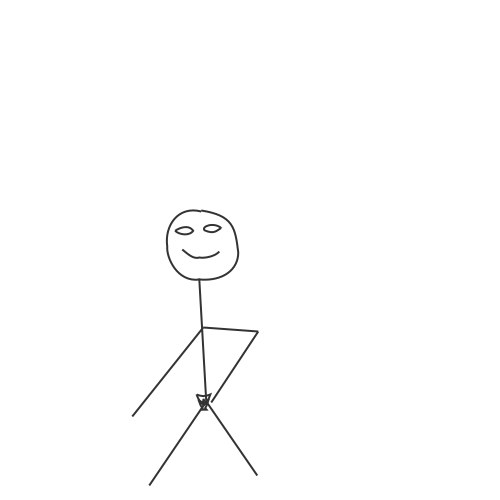

<!DOCTYPE >
<html>
  <link rel="preconnect" href="https://fonts.googleapis.com" />
  <link rel="preconnect" href="https://fonts.gstatic.com" crossorigin />
  <link
    href="https://fonts.googleapis.com/css2?family=Datatype:wght@100..900&display=swap"
    rel="stylesheet"
  />
  <link rel="stylesheet" href="./style.css" />
  <script src="./move.js" defer></script>
</html>
<body style="padding-top: 0">
  <main>
    
    
    
    
  </main>
</body>
